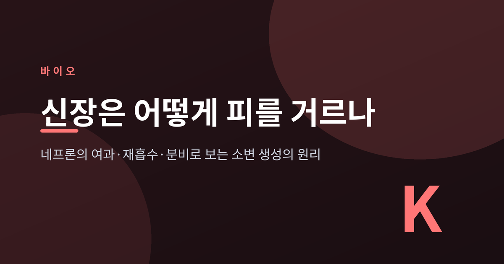
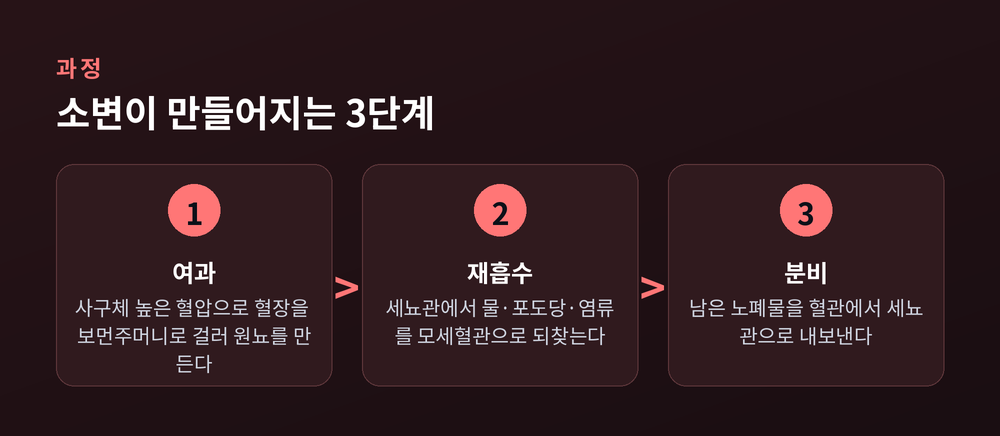
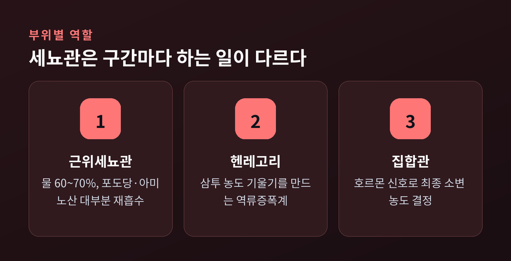
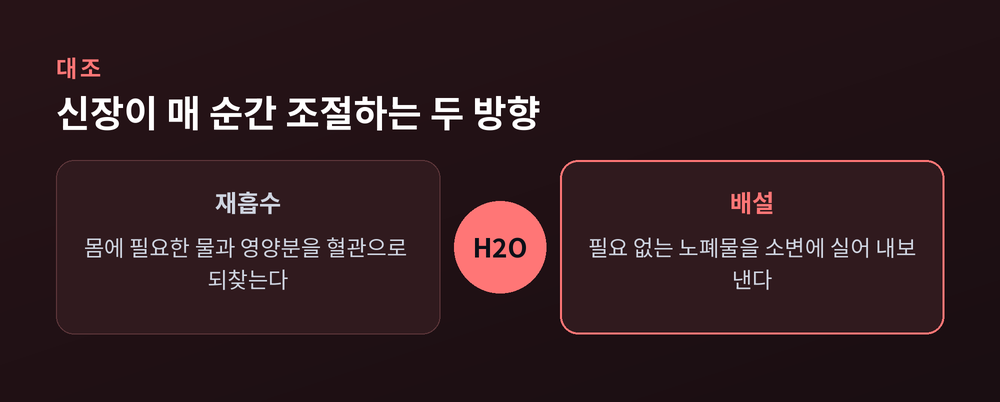
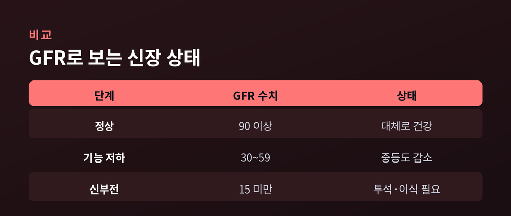

오늘은 신장이 어떻게 피를 걸러 소변을 만드는지 그 원리를 정리해 보겠습니다. 하루 동안 신장이 거르는 혈액의 양은 180L에 이르지만, 실제 소변은 1.5L 남짓입니다. 이 놀라운 차이가 어떻게 생기는지, 네프론이라는 작은 여과 장치의 여과·재흡수·분비 과정을 따라가 봅니다.

신장의 일은 단순히 피를 거르는 데서 끝나지 않습니다.
일단 대량으로 걸러낸 뒤, 몸에 필요한 것을 거의 전부 되찾아옵니다.
정상 성인의 사구체여과율은 분당 약 125mL입니다. 하루로 환산하면 약 180L를 여과합니다. 그런데 최종 소변은 하루 1.5L 안팎에 불과합니다. 여과된 액체의 약 99%를 다시 흡수하고, 1%만 내보내는 셈입니다.
왜 이렇게 비효율적으로 보이는 방식을 택했을까요.
이유는 정밀함에 있습니다. 크게 걸러 두고 필요한 것만 골라 되찾으면, 노폐물은 확실히 버리면서 물과 영양분은 상황에 맞게 조절할 수 있습니다.
혈액을 조금씩만 거른다면 노폐물이 몸에 남기 쉽습니다. 반대로 크게 걸러 놓으면, 그날의 수분 상태나 식사에 따라 되찾는 양을 자유롭게 바꿀 수 있습니다. 신장이 손해 보는 듯한 방식을 고집하는 데는 이런 이유가 있습니다.
이 모든 일은 '네프론(nephron)'이라는 작은 단위에서 일어납니다.
신장 하나에는 약 100만 개의 네프론이 들어 있습니다.
네프론은 두 부분으로 나뉩니다. 피를 거르는 '신소체'와, 걸러진 액체를 다듬는 '세뇨관'입니다.
신소체는 실뭉치처럼 뭉친 모세혈관인 사구체와, 그것을 감싼 보먼주머니로 이뤄집니다. 세뇨관은 근위세뇨관에서 시작해 헨레고리를 지나 원위세뇨관으로 이어지고, 여러 네프론이 하나의 집합관으로 모입니다.
물이 흐르는 길로 그려 보면 이렇습니다.
사구체에서 걸러진 액체는 보먼주머니 → 근위세뇨관 → 헨레고리 → 원위세뇨관 → 집합관을 차례로 지나며 소변으로 완성됩니다.
혈액이 소변으로 바뀌는 과정은 세 단계로 이뤄집니다.

첫째는 여과입니다. 사구체로 들어가는 혈관이 나가는 혈관보다 굵습니다. 그래서 사구체 안의 혈압이 높아지고, 이 압력 차이로 혈장 성분이 보먼주머니로 밀려 나갑니다. 이렇게 걸러진 액체를 원뇨라고 부릅니다. 물, 포도당, 아미노산, 무기염류, 요소처럼 작은 분자는 통과하지만, 적혈구나 단백질처럼 큰 물질은 걸러지지 않습니다.
둘째는 재흡수입니다. 원뇨가 세뇨관을 지나는 동안, 몸에 필요한 물질이 세뇨관을 감싼 모세혈관으로 다시 흡수됩니다. 포도당과 아미노산은 능동수송으로 거의 100% 되찾아옵니다. 그래서 건강한 사람의 소변에는 당이 나오지 않습니다. 소변에서 당이 검출되면 당뇨를 의심하는 이유가 여기에 있습니다.
셋째는 분비입니다. 여과 때 미처 걸러지지 못하고 혈액에 남은 노폐물을, 모세혈관에서 세뇨관 쪽으로 다시 내보냅니다. 방향이 재흡수와 반대입니다. 이 과정으로 남은 노폐물을 마저 제거하고, 혈액의 산·염기 균형까지 함께 조율합니다.
세뇨관은 하나의 긴 관이지만, 구간마다 역할이 나뉩니다.

근위세뇨관은 재흡수의 주력입니다. 여과된 물의 약 60~70%, 그리고 포도당과 아미노산 대부분을 여기서 되찾습니다.
헨레고리는 수질 깊숙이 내려갔다 올라오는 U자 고리입니다. 이 구간은 신장 안쪽으로 갈수록 농도가 짙어지는 삼투 기울기를 만듭니다. 이를 역류증폭계라 부릅니다. 이 기울기 덕분에 나중에 집합관에서 물을 효율적으로 빼내 소변을 농축할 수 있습니다.
원위세뇨관은 나트륨, 칼슘, 인산 같은 물질을 미세하게 조절하는 정밀 구간입니다. 앞선 근위세뇨관이 대량으로 처리한다면, 이곳은 몸의 신호에 맞춰 마지막 미세 조정을 맡습니다.
집합관은 마지막 관문입니다. 호르몬 신호를 받아 물과 나트륨의 재흡수량을 정하고, 소변의 최종 농도를 결정합니다.
신장은 정해진 대로만 움직이지 않습니다. 몸 상태에 따라 소변량을 바꿉니다.
여기에는 두 가지 조절 장치가 관여합니다.
하나는 항이뇨호르몬(ADH), 다른 이름으로 바소프레신입니다. 몸이 탈수되어 혈액이 진해지면 분비됩니다. 집합관에 아쿠아포린이라는 물 통로를 늘려 물 재흡수를 촉진하고, 그 결과 소변량을 줄입니다. 물을 아끼는 장치인 셈입니다.
다른 하나는 레닌-안지오텐신-알도스테론 시스템입니다. 신장으로 가는 혈류가 줄면 레닌이 분비되고, 연쇄 반응을 거쳐 안지오텐신 II와 알도스테론이 만들어집니다. 이들은 혈관을 조이고 나트륨과 물의 재흡수를 늘려 혈압을 끌어올립니다. 짜게 먹으면 몸이 붓고 혈압이 오르는 것도 이 조절 경로와 무관하지 않습니다.

정리하면, 재흡수는 필요한 것을 되찾는 방향이고 배설은 필요 없는 것을 내보내는 방향입니다. 신장은 이 두 힘의 균형을 매 순간 조절합니다.
예전에는 소변을 그저 노폐물 찌꺼기로만 여겼습니다. 지금은 소변량과 성분 자체가 몸의 수분·혈압·전해질을 조절한 결과물임을 압니다.
신장의 상태는 사구체여과율(GFR)로 가늠합니다. 혈액 속 크레아티닌 수치로 이 값을 추정합니다.

GFR이 90 이상이면 대체로 정상입니다. 60 밑으로 떨어지면 기능 저하가 시작되고, 15 아래로 내려가면 신부전, 곧 말기신부전으로 투석이나 이식이 필요한 단계입니다.
문제는 초기에는 거의 증상이 없다는 점입니다. 상당히 나빠질 때까지 조용합니다. 그래서 신장을 '침묵의 장기'라 부릅니다.
기능이 4~5단계까지 떨어지면 그제야 요독 증상이 나타납니다. 피로, 식욕 부진, 가려움증, 근육 경련, 손발 저림, 눈이나 발목 주위의 부종 같은 신호입니다. 노폐물을 충분히 걸러 내지 못해 몸에 쌓인 결과입니다.
다만 이 글은 원리를 설명하기 위한 것이며, 증상만으로 자가 진단을 권하지는 않습니다. 걱정되는 지표가 있다면 검사를 받아 보시길 권합니다.
정리하면 이렇습니다.
신장은 하루 180L를 크게 걸러 두고, 그중 99%를 정교하게 되찾은 뒤, 남은 1%에 노폐물을 실어 내보냅니다.
"크게 거르고, 세심하게 되찾는다." 신장이 피를 다루는 방식은 이 한 문장으로 요약됩니다.
작은 여과 장치 하나가 이토록 조용히, 그러나 쉼 없이 일하고 있다는 사실을 떠올린다면, 오늘 마시는 물 한 잔이 조금은 달리 느껴지지 않을까 싶습니다.